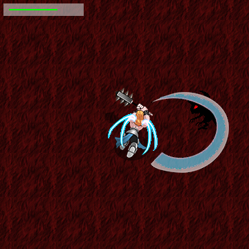

This was my first ever project in game development. It's designed as an extremely fast paced arcade shooter with melee combat. Characters fly around the screen at speeds equivalent to 200+ mph. It's made from the ground up in Java using nothing but awt. No third party libraries or engines are used. Image rendering is raster-based and arrays of pixels are rendered one at a time rather than using BufferedImage rendering. An RBGA color blending algorithm is also implemented. Mobs with A* path finding have been implemented. Particle systems with mini explosions on collision have been implemented. Health bar has been implemented.
Next steps are perfecting melee combat, adding menus for the intro screen and player death, and developing the multiplayer aspect.
Download Jar file.